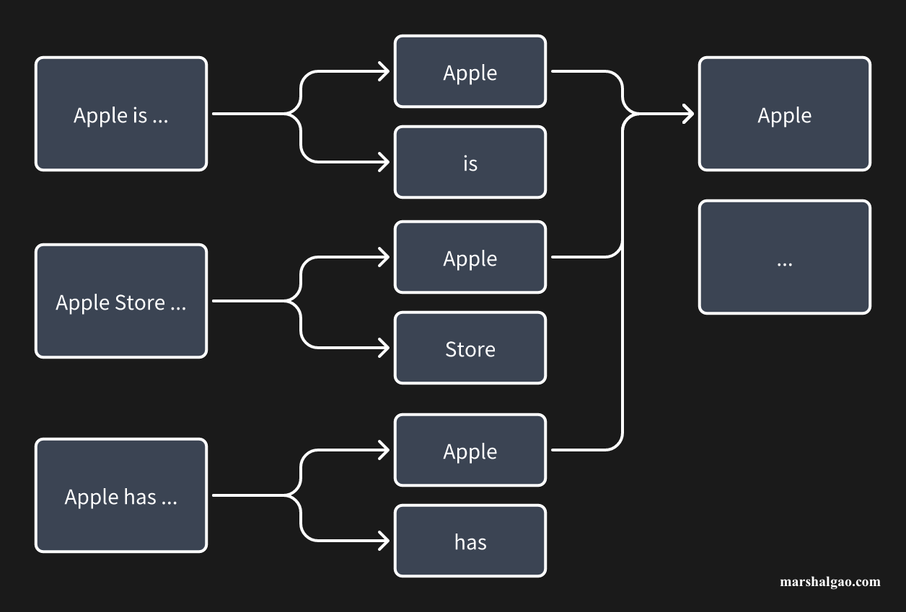

What Are Inverted Index and Boolean Retrieval?
Aug 23, 2024
3 minutes, 550 Words
After being a search produt manager for a period of time, I frequently heard technical terms such as inverted index and boolean retrieval. Out of curiosity, I went to thoroughly learn about them.
Jumping out of the search engine, the so-called index is use a keyword to search and match from the beginning of the document until the corresponding query word is found. This method is logically simple, essentially brute-force disassembly, or exhaustive. However, it brings disadvantages. If the text is sufficient and long enough, then the idexing time will be very long and the efficiency is not high. But searching is a scene where the need is met in real time, and if the speed is too slow, the ueser experience will deteriorate.
And the inverted idex is like looking up a dictionary. First, find the corresponding word according to the first letter, and then turn to the corresponding page for fine-grained query. The reason why this can be done is that the directory of the dictionary has been classified according to the first letter. For example, if you want to query ‘Apple’, then you will go to the classifcation starting with ‘A’ to find ‘Apple’.
In a search engine, each result (i.e., document) will be cut into multiple words (i.e., word segmentation), and the words cut out from different documents will most likely repeated, so earch segmented word will be assoicated with multiple documents. One segmented word can estabilsh a connection with multiple documents, and this process is indexing. Returning to the above example, in the documents that contain ‘Apple’ afer word segmentation, an index established by ‘Apple’ will be formed, just like the directory in a dictionary. When a user searches for ‘Apple’, all the documents with ‘Apple’ will be quickly found.

But when a user searches for ‘Apple Store’, in theory, only the text containing ‘Apple Store’ should be retrieved. In the above example, ‘Apple is …’ and ‘Apple has …’ should not be retrieved. How to achieve such a matching mechanism? The answer is boolean retrieval.
There are three important judgment logics in boolean retrieval, which are AND (intersection), OR (union), and NOT (difference). After the user enters keywords, they will be split into multiple word segments, and these three logics will be used for matching and retrieval between multiple word segments, and only the results that meet the conditions will be retrieved. Then continue to use the above example to explain. When a user searches for ‘Apple Store’, this query will be cut into two words, ‘Apple’ and ‘Store’. ‘Apple’ can be retrieve the text ‘Apple is …’, ‘Apple Store …’, and ‘Apple has …’. ‘Store’ can retrieve ‘Apple Store …’. We assume that complete inclusion is required here, then the boolean operation that needs to be performed in AND, and the intersection of the retrievable texts of ‘Apple’ and ‘Store’ is taken, and finally ‘Apple Store …’ is retrieved.
So are OR or NOT useless? Of course not. For example, if you want to expand the retrieval, then in the above case, OR operation can be performed to retrieve all the texts. However, the relevance between the text and query will also become worse. Of course, this is just for easy understanding, and it may not be used like this in actual business.